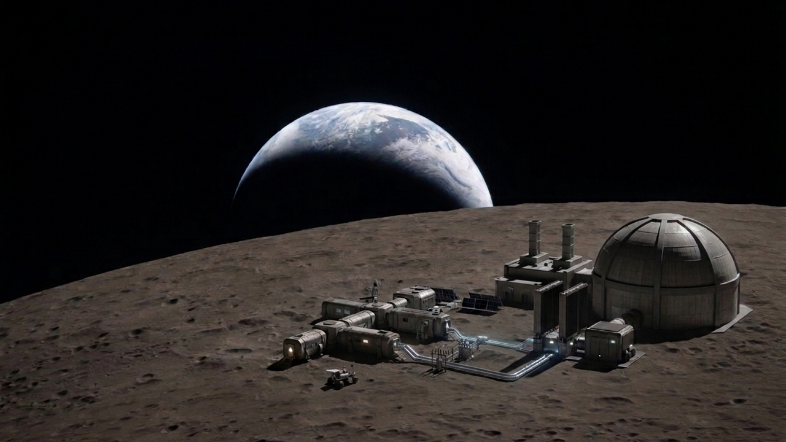
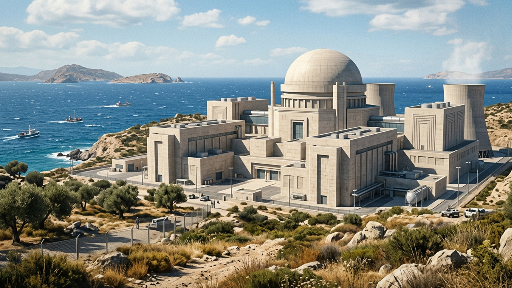
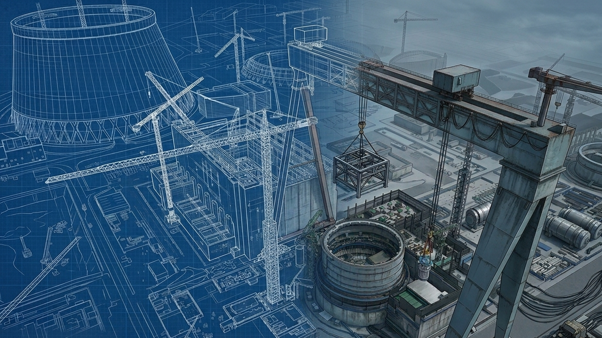
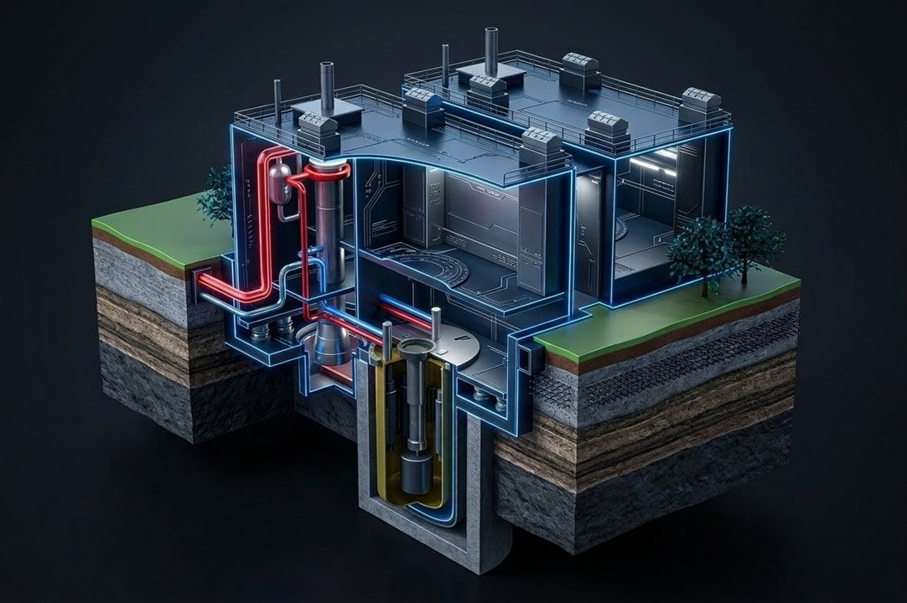
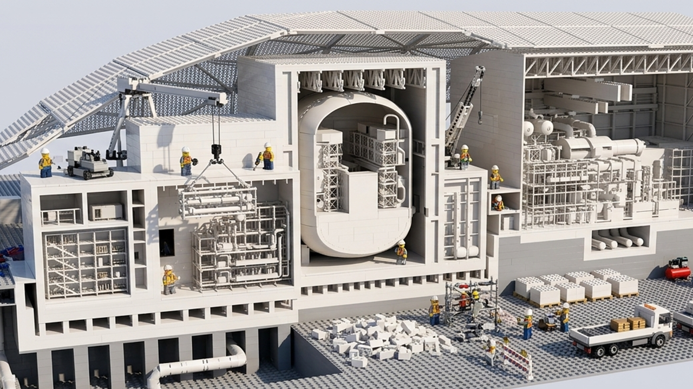
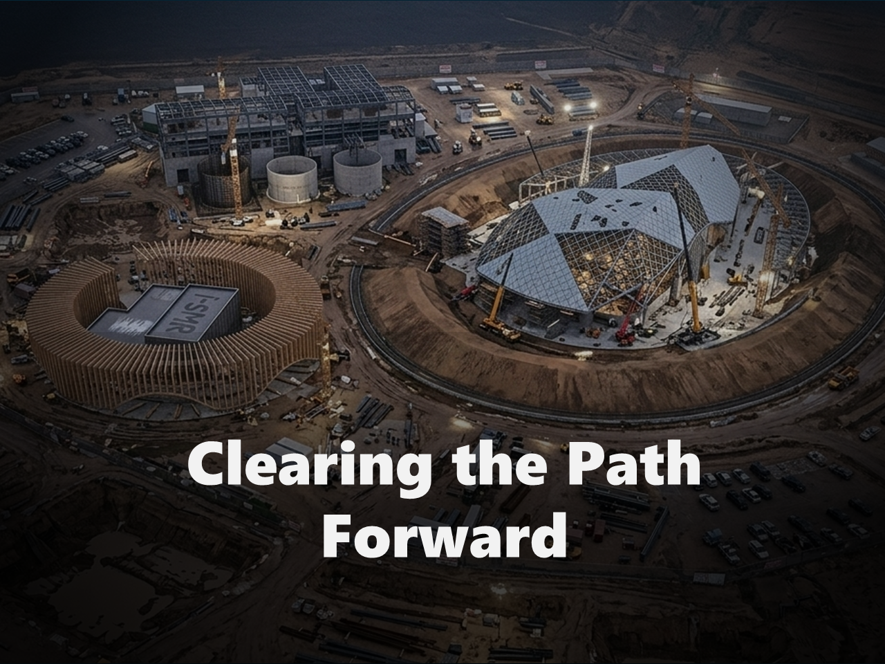
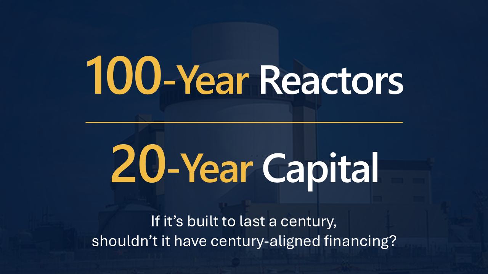
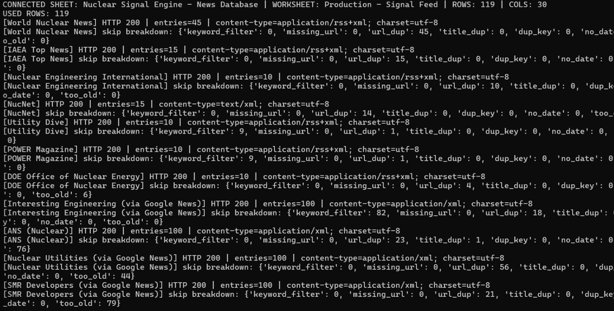
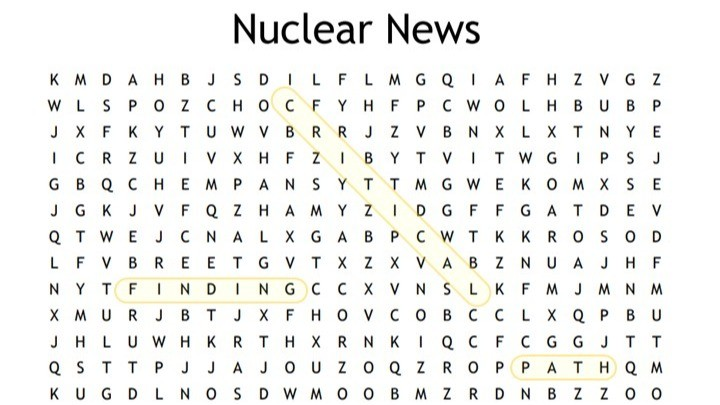

Nuclear Steps Up to the Plate
They say if you build it, they will come. Nuclear built the infrastructure. Now everyone is showing up.
Archive
Browse published editions of Finding Critical Path, with each week collected as a complete editorial read on the signals shaping the nuclear industry.
They say if you build it, they will come. Nuclear built the infrastructure. Now everyone is showing up.
Where nuclear shows up next may matter almost as much as what gets built.

Nuclear is not just trying to move faster. It is starting to think further ahead.

Nuclear has never lacked ambition. Now those plans are beginning to translate into commitments.

Building reactors changes the grid. Preparing the systems that support them changes the future of energy. This week’s signals indicate the nuclear industry may be starting to do both at once.

Technology launches industries. Industrial capacity sustains them. Energy systems expand when the infrastructure around them begins to grow.

When new nuclear advances simultaneously in four countries around the globe, the message is clear. New nuclear is happening now.

Reactor designs are stretching toward 100-year lifespans. Financial architecture is shifting to support that century-scale ambition.

Nuclear deployment is entering a phase where time itself is becoming a design variable.

New nuclear needs more than policy and momentum. Fuel security is the strategic variable that will define scale.

This week, the pace of regulatory reorganization is reshaping legacy timelines, prompting a new negotiation between caution and growth in nuclear deployment.

This week in nuclear tech marks a subtle but significant shift: the sector is converging on integrated innovation ecosystems that span from computational advances to supply chain autonomy.

I probably should not be surprised that AI could help with one of my personal headaches.